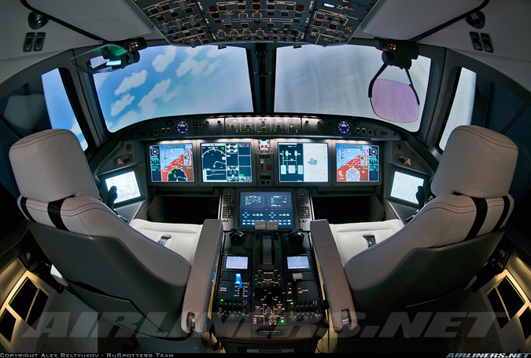

State-Of-The-Art Cockpit Displays
Larger Displays
Cockpit of Irkut MS 21
When cockpits moved from analogue dials to digital displays to display information to the pilots,
the main advantage was that information being displayed to the pilots was much clearer and more accurate.
Instead of having analogue dials all over the cockpit and needing to search for the correct dial,
the information was now displayed digitally on digital displays in front of the pilots.
Currently, most commercial airliners have 6 LCD displays. For example, on the Boeing 777 there are 2 for the PFD,
2 for the ND, 1 for the EICAS and 1 for the lower MFD.
However, the current trend with newer airliners that are entering into service is for the number of displays
the size of each display to be increased and the number of displays in total to be reduced.
For example, on the modern Airbus A220 (previously known as the Bombardier CS100 or CS300) there are only 5 big LCD Displays.
The main advantages of having larger displays are that:
- Allows information to be displayed more clearly
- Allows the pilot to understand information quickly
- Displays can be reconfigured based on which phase of flight the plane is at
- Allows for the implementation of Synthetic Vision
Synthetic Vision
Garmin's G3000 system
Synthetic Vision System (SVS) also known as Synthetic Vision,
is a type of computer system that uses 3D Imagery to provide pilots with a visual reference of the environment they are currently flying in.
It was originally developed back in the 1970s by NASA and the US Air Force,
however the system was only installed on a Gulfstream V test aircraft in 2005 in partnership with NASA.
The system was only certified by the FAA at the end of 2007 and early 2008.
The earliest versions of Synthetic Vision were installed on the Gulfstream G350, G450 and G550 aircraft.
This version was capable of displaying 3D colour terrain images from an onboard database overlaid with the PFD symbology.
This meant that the traditional artificial horizon was replaced. However, as technology has advanced more display system
manufacturers such as Garmin and Rockwell Collins are able to integrate Synthetic Vision into their display systems.
The main advantages of Synthetic Vision are:
- It wallows the pilot to navigate around terrain when the weather is less than ideal
- It improves the situational awareness of the pilot
Head-Up Display
Cockpit of Boeing 737-800
A Heads-Up Display is one of the newer display technologies that can be found inside modern aircraft cockpits.
The Heads-Up Display makes use of a transparent display that is placed within the line of sight of the pilot.
The Heads-Up Display shows essential information that is identical to the Primary Flight Display to the pilot.
This technology was mainly developed for military uses; however,
it is becoming increasingly common in commercial airliners and business jets.
Some aircraft that currently have the Heads-Up Display installed in the cockpit are the Boeing 787 and Gulfstream G650.
The main advantage of having a Heads-Up Display installed is that the pilot does not need to change their eye focus to look at the PFD when they are flying the aircraft,
this is especially useful during situations such as take-off and landing where concentration is of utmost importance.
Video of HUD in Operation:
Night Landing at LAX in a Boeing 737NG
New ways of interacting with the aircraft
QWERTY Keyboard
QWERTY Keyboard of Airbus A380
Arguably one of the most important pieces of equipment that can be found in the cockpit would the Flight Management System (FMS).
It is through this system that the pilot would enter important pieces of information such as the flight plan and weight of the aircraft
such that the aircraft would be able to follow the flight plan to reach its destination safely. In order to key in all this information,
the pilot makes use of the Control Display Unit (CDU) which has a keyboard to enable the pilot to do so.
Currently, on older aircraft such as the Airbus A320, the keyboard is laid out in alphabetical order from ‘A’ to ‘Z’.
This is currently the most common layout that can be found on most aircraft.
However, as times have changed and typing on a computer has become a more common thing, on newer aircraft such as the Airbus A380 and A350,
the keyboard layout has changed to the QWERTY layout that is similar to the layout on our computers.
The advantage of having a QWERTY keyboard layout compared to a keyboard laid out in alphabetical order is that the pilots are able to type in
information in a quicker and more efficient manner as they are using a layout that is familiar and common to them.
Touch Screen Display
Gulfstream's Symmetry Flight Deck
As touchscreens have solidified their place in our lives, they are slowly also making their way into the cockpits of newer aircraft.
Currently, the most common way to control the different systems onboard the aircraft is via switches or knobs that are mainly found on the overhead panel of the cockpit.
However, in some aircraft such as the newly introduced Gulfstream G600 and Boeing 777X, touchscreen displays are being introduced as the main way of interacting with the aircraft.
For example, in the Gulfstream G600 most of the overhead panel has been condensed down to just 3 touchscreen displays to control the various systems on board the aircraft.
Compared to the older Gulfstream G650 which still has a traditional overhead panel with knobs and switches,
having a touchscreen display makes the cockpit feel more modern and less cramped with knobs and switches everywhere.
The main advantage of having touchscreen displays as a way of interacting with the aircraft is that it helps to save space as the overhead panel does not need to include
all the knobs and switches everywhere. Another advantage of having touchscreen displays is that it is also a more intuitive way for the pilots to interact with the aircraft.
Gesture and Voice Control
Augmented Reality Glasses
As devices start to become more interconnected and the amount of computing power available to us has increased over the years,
a proposed new way of interacting with the aircraft is with the use of gesture & voice controls.
The current proposal would be for the pilot to wear an augmented reality headset or a pair of special glasses.
The pilot would then be able to look at the instrument, select and manipulate it using voice commands.
For example, if the pilot would wish to change the squawk code on the transponder,
he could point at the transponder and use the voice command “Set 1200” instead of having to manually tune the numbers.
In addition to that, the augmented reality headset or special glasses can also be used to display information from the instrument to the pilots,
which is similar to the Heads-Up Display.